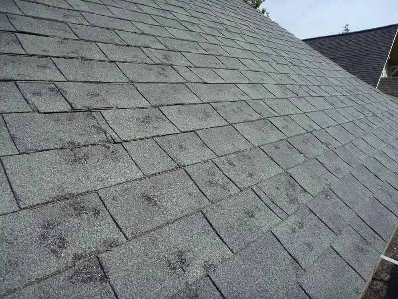
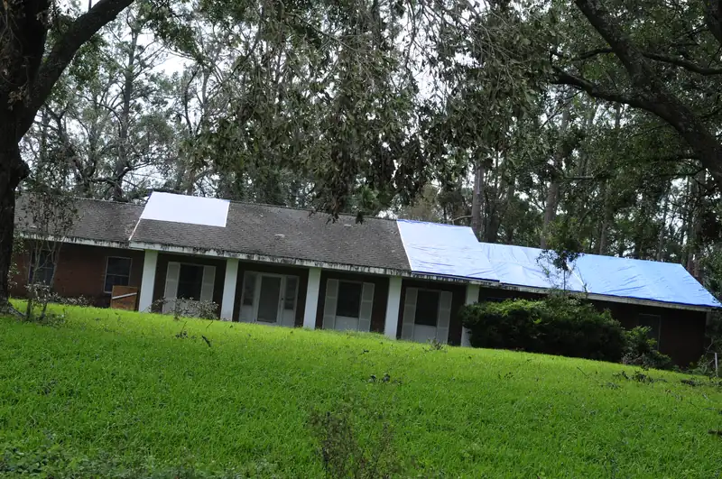

On September 4, 2025, hail came down across west Knox County. The Storm Prediction Center's storm reports for that day list stones up to 1.75 inches, golf-ball size, in Karns, half-dollar hail off Solway Road, and quarter-size hail near Hardin Valley, Bearden and Farragut.
If you live in one of those neighborhoods, somebody has probably knocked on your door since. Some of the people knocking are honest roofers working the area. Some are storm chasers who'll be gone by the time your roof leaks. Here's how to handle the knock either way, without getting talked into anything on your porch.
The pitch you'll hear
It tends to go the same way. A friendly person says they're working on a house down the street, noticed damage on your roof, and can take a look right now at no charge. After a few minutes up top, they come down with phone photos and a clipboard. Then comes the push: sign today and they'll get you on the schedule ahead of the rush, or sign today and you'll get a better price.
The FTC's guide to scams after weather emergencies names that exact move: a discount that only holds if you sign a contract right away. A fair price doesn't expire at sundown.
Rule one: don't sign anything today
Nothing you sign on the porch helps you. A contract signed the day after a storm, before you've talked to your insurer or a second roofer, is the one people regret.
That includes papers that don't look like contracts. Some door-to-door forms are called an authorization or an agreement, and they can tie you to one company if your claim pays. Read anything with a signature line as if it's a contract, because it may be one.
If someone keeps pushing, say this: "Leave me your card and a written estimate. I'll call you." Then close the door. A good roofer will still be there tomorrow.
Rule two: you pay your deductible
You pay your deductible. We never waive it or cover it.
If anyone offers to "take care of" your deductible, eat it, or rebate part of it back to you, that's a reason to walk away. Your deductible is your share of the claim. A roofer who covers it has to make that money back somewhere, either out of the claim or out of the work, and it puts your claim at risk.
Some policies carry a separate deductible for wind or hail. Check your declarations page before an adjuster comes out, so the number doesn't catch you off guard.
Rule three: get a written scope
A written scope is a list of exactly what's being repaired or replaced, slope by slope, with quantities and prices. It's the opposite of "we'll take care of the whole thing."
A useful scope names:
- Which slopes are damaged, and which aren't
- The tear-off, and how many layers are coming off
- What happens to any rotted decking, with a price per sheet
- Underlayment, drip edge, flashing and vents
- Gutters, downspouts, screens or siding that took hits
- The shingle line and color, and what happens if your color can't be matched
Get one before you sign anything. If you're comparing two roofers, lay their scopes side by side on the kitchen table. When one is a page of detail and the other is three lines, you've learned something about both companies.

Rule four: the claim is yours
Call your insurance company yourself. It's your policy and your claim. A roofer can show you damage, take photos and write a scope, but the conversation with your insurer belongs to you, and so do the decisions.
The FTC adds two points worth following to the letter. Don't sign your insurance check over to a contractor. And if someone wants cash up front, walk away. Hold the final payment until the work is done and you're satisfied with it.
What to do instead of signing
- Walk around the house and take dated photos from the ground: each side of the roof, dents in gutters and downspouts, dings on the mailbox or the car, and anything wet inside.
- Stay off the roof. Shingles are slick after a storm, and hail bruises are hard to judge from a ladder anyway.
- Get an inspection from a roofer you called, rather than one who called on you. A free roof inspection from us is one option.
- If there's damage worth a claim, call your insurer and file it.
- Get written scopes from more than one roofer before you sign with anyone.

What hail damage looks like
On asphalt shingles, hail leaves dark spots where the granules got knocked loose, and bruises that feel soft when you press on them, a bit like a bruise on an apple. Soft metals often show it before the shingles do: gutters, downspouts, vent caps and the aluminum wrap around windows. If your gutters are dented, get the roof looked at.
For more on what to look for, read hail damage in East Tennessee, and for how claims usually go, see the storm and insurance section of our emergency repair page.
Our take on door knockers
Our opinion: you don't have to slam the door on everyone who knocks after a storm. Some of them are good roofers who saw damage on your street. The way to sort them out is the same for all of them. Take the card, get a written scope, compare it with one from a roofer you found yourself, and decide at your kitchen table a few days later.
Questions
The roofer says my insurance will pay for a whole new roof. Should I believe it?
Only your insurer decides what's covered. A roofer can tell you what damage they see. Wait for your insurer's decision in writing before you sign for any work that depends on it.
Is it all right to let a door knocker get on my roof?
That's your call. If you do, ask for copies of the photos they take and a written scope, and don't sign anything that day.
How soon do I have to file a hail claim?
Policies set their own deadlines. Check yours or ask your agent, and don't let anyone rush you past getting a second opinion.